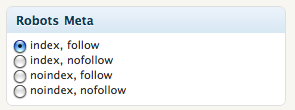
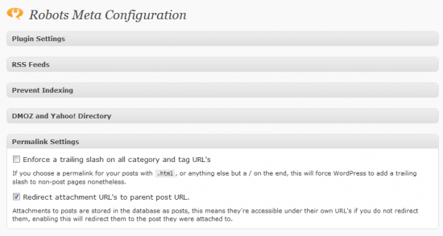

This is my second post about Robots meta tag. In the previous post, I discussed all about Meta robots tag. In this post, I will discuss how to setup such tags in WordPress by using a free Meta robots WordPress plugin.
Why we need to setup robots meta tag?
Post Panda, its important to remove low quality posts from Search index directory. Why? Because Panda is a domain level penalty and even if your blog have one low quality post, it can hurt overall ranking of your website. But Chaitanya, My all posts are having valuable and quality information then why I need to setup this? I agree, your all articles may be having quality information but Wait!! What about author and contact-us pages. Do these pages add any value to user? Off course No, that’s where we will be needing these tags to prevent such pages from being indexed and keep us safe from any penalty.
Let’s jump to the main topic Now!!
Meta robots WordPress plugin
Yeah!! We are talking about Meta robots WordPress plugin. It’s a free plugin and anyone can install it.
Download Link: Robots Meta tag: WordPress plugin
Pros: 1) With this you can easily setup nofollow or noindex for any pages such as category, tags, author page, feeds etc.
2) It will add a block (see below screenshot) to edit post and edit page admin areas, so that whenever you create post or page, you can choose any of the option right away from the same place.

Options are:
a) Index, follow: Search engine bot will index and will follow all the links.
b) Index, nofollow: Search engine bot will index the page but will not follow any link from the page.
c) noindex, follow: Search engine bot will not index the webpage but it will follow all the links present in the page.
d) noindex, nofollow: Search engine bot will neither index the page nor follow any links from the page.
Meta robots WordPress plugin settings
Setting page for this plugin would like the below snapshot

Expand each option and check the boxes as mentioned below-
RSS feeds:
Noindex the comment RSS feeds: Check
Prevent indexing option:
This site results page: Check
The login and register pages: Check
Author archive: Check
Date based archive: Check
Category archive: Check
Tag Archive: Check
Internal nofollow setting:
Nofollow outbound links on the homepage: Check
Nofollow login and registration link: Check
Nofollow comment links: Check
If you have any queries regarding “Robots meta tag” or “meta robots wordpress plugin” settings then feel free to drop a comment below.
Fatal error: Call to undefined function add_action() in C:wampwwwrobots-metarobots-meta.php on line 30
robots-meta.php showthis error